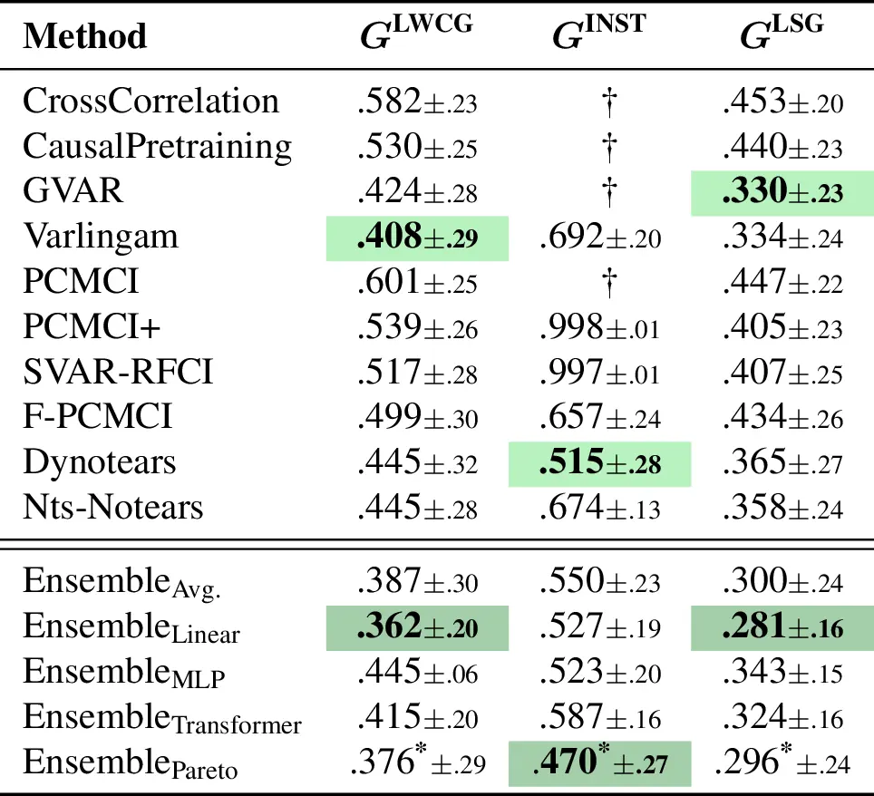
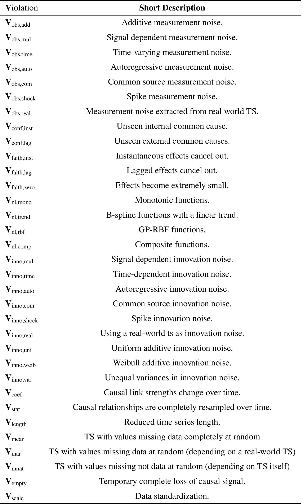
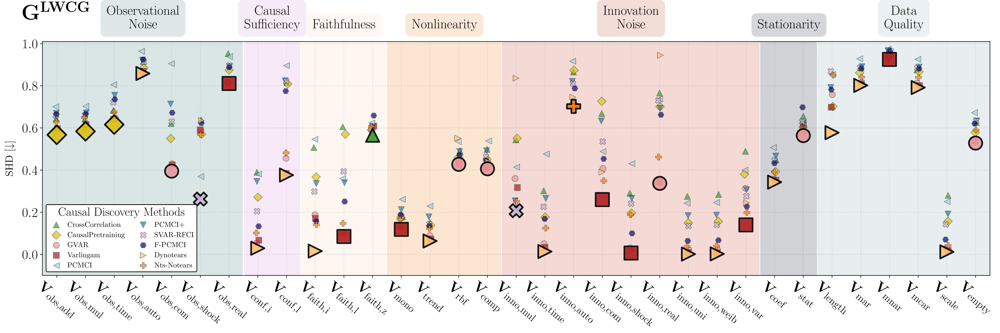

Causal Discovery (CD) is a powerful framework for scientific inquiry. Yet, its practical adoption is hindered by a reliance on strong, often unverifiable assumptions and a lack of robust performance assessment. To address these limitations and advance empirical CD evaluation, we present TCD-Arena, a modularized and extendable testing kit to assess the robustness of time series CD algorithms against stepwise more severe assumption violations.
For demonstration, we conduct an extensive empirical study comprising arround 30 million individual CD attempts and reveal nuanced robustness profiles for 33 distinct assumption violations. Further, we investigate CD ensembles and find that they can boost general robustness, which has implications for real-world applications. With this, we strive to ultimately facilitate the development of CD methods that are reliable for a diverse range of synthetic and potentially real-world data conditions.

TCD-Arena is an active benchmarking framework.
You can directly use our provided data to benchmark.
But you can also generate your new and custom data by mixing various violations.

Individual evaluation is possible.
Check out our repository for more details on how to use TCD-Arena for your own benchmarking.
We are also working on a leaderboard to submit your results and compare with others.

The more benchmarking the better! While we are not connected to these projects, we specifically encourage to also test your methods on:
@inproceedings{
anonymous2026tcdarena,
title={{TCD}-Arena: Assessing Robustness of Time Series Causal Discovery Methods Against Assumption Violations},
author={Gideon Stein and Niklas Penzel and Tristan Piater and Joachim Denzler},
booktitle={The Fourteenth International Conference on Learning Representations},
year={2026},
url={https://openreview.net/forum?id=MtdrOCLAGY}
}